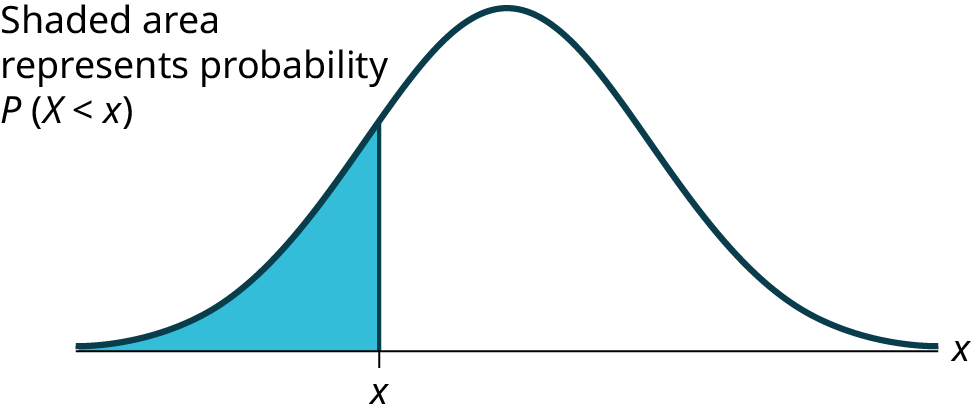
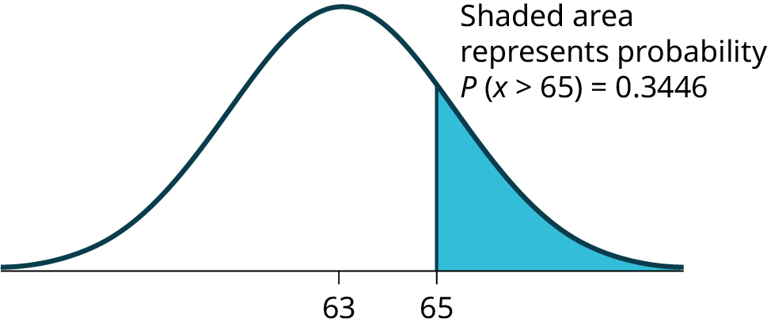
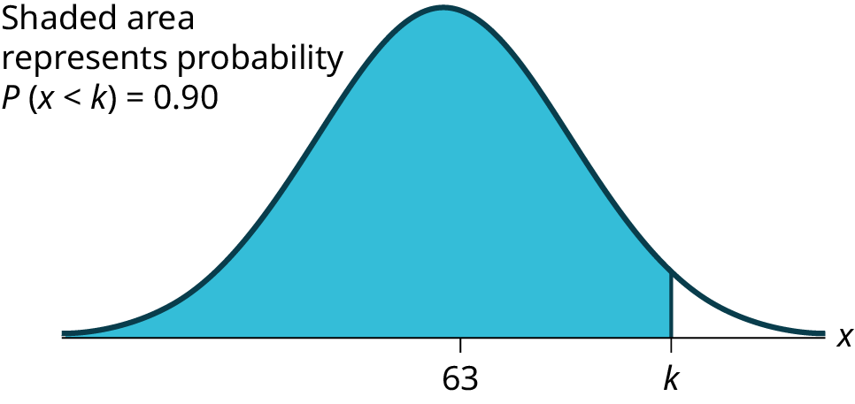

The shaded area in the following graph indicates the area to the left of x. This area is represented by the probability P(X < x). Normal tables, computers, and calculators provide or calculate the probability P(X < x).

The area to the right is then
P
(
X
>
x
) = 1 –
P
(
X
<
x
). Remember,
P
(
X
<
x
) =
Area to the left
of the vertical line through
x
.
P
(
X
>
x
) = 1 –
P
(
X
<
x
) =
Area to the right
of the vertical line through
x
.
P
(
X
<
x
) is the same as
P
(
X
≤
x
) and
P
(
X
>
x
) is the same as
P
(
X
≥
x
) for continuous distributions.
Calculations of Probabilities
Probabilities are calculated using technology. There are instructions given as necessary for the TI-83+ and TI-84 calculators.
NOTE
To calculate the probability, use the probability tables provided in another section without the use of technology. The tables include instructions for how to use them.
If the area to the left is 0.0228, then the area to the right is 1 – 0.0228 = 0.9772.
Try It
If the area to the left of x is 0.012, then what is the area to the right?
The final exam scores in a statistics class were normally distributed with a mean of 63 and a standard deviation of five.
a. Find the probability that a randomly selected student scored more than 65 on the exam.
a. Let X = a score on the final exam. X ~ N(63, 5), where μ = 63 and σ = 5.
Draw a graph.
Then, find P(x > 65).
P(x > 65) = 0.3446

The probability that any student selected at random scores more than 65 is 0.3446.
Go into 2nd DISTR.
After pressing 2nd DISTR, press 2:normalcdf.
The syntax for the instructions are as follows:
normalcdf(lower value, upper value, mean, standard deviation)
For this problem: normalcdf(65,1E99,63,5) = 0.3446. You get 1E99 (= 1099) by pressing 1, the EE key (a 2nd key) and then 99. Or, you can enter 10^99 instead. The number 1099 is way out in the right tail of the normal curve. We are calculating the area between 65 and 1099. In some instances, the lower number of the area might be –1E99 (= –1099). The number –1099 is way out in the left tail of the normal curve.
Historical Note
The TI probability program calculates a z-score and then the probability from the z-score. Before technology, the z-score was looked up in a standard normal probability table (because the math involved is too cumbersome) to find the probability. In this example, a standard normal table with area to the left of the z-score was used. You calculate the z-score and look up the area to the left. The probability is the area to the right.
z = = 0.4
Area to the left is 0.6554.
P(x > 65) = P(z > 0.4) = 1 – 0.6554 = 0.3446
Find the percentile for a student scoring 65:
*Press 2nd Distr *Press 2:normalcdf(
*Enter lower bound, upper bound, mean, standard deviation followed by )
*Press ENTER.
For this Example, the steps are
2nd Distr 2:normalcdf(65,1,2nd EE,99,63,5) ENTER
The probability that a selected student scored more than 65 is 0.3446. To find the probability that a selected student scored more than 65, subtract the percentile from 1.
b. Find the probability that a randomly selected student scored less than 85.
b. Draw a graph.
Then find P(x < 85), and shade the graph.
Using a computer or calculator, find P(x < 85) = 1.
normalcdf(0,85,63,5) = 1 (rounds to one)
The probability that one student scores less than 85 is approximately one (or 100%).
c. Find the 90th percentile (that is, find the score k that has 90% of the scores below k and 10% of the scores above k).
c. Find the 90th percentile. For each problem or part of a problem, draw a new graph. Draw the x-axis. Shade the area that corresponds to the 90th percentile.
Let k = the 90th percentile. The variable k is located on the x-axis. P(x < k) is the area to the left of k. The 90th percentile k separates the exam scores into those that are the same or lower than k and those that are the same or higher. Ninety percent of the test scores are the same or lower than k, and ten percent are the same or higher. The variable k is often called a critical value.
k = 69.4

The 90th percentile is 69.4. This means that 90% of the test scores fall at or below 69.4 and 10% fall at or above. To get this answer on the calculator, follow this step:
invNorm in 2nd DISTR. invNorm(area to the left, mean, standard deviation)
For this problem, invNorm(0.90,63,5) = 69.4
d. Find the 70th percentile (that is, find the score k such that 70% of scores are below k and 30% of the scores are above k).
d. Find the 70th percentile.
Draw a new graph and label it appropriately. k = 65.6
The 70th percentile is 65.6. This means that 70% of the test scores fall at or below 65.5 and 30% fall at or above.
invNorm(0.70,63,5) = 65.6
Try It
The golf scores for a school team were normally distributed with a mean of 68 and a standard deviation of three.
Find the probability that a randomly selected golfer scored less than 65.
A personal computer is used for office work at home, research, communication, personal finances, education, entertainment, social networking, and a myriad of other things. Suppose that the average number of hours a household personal computer is used for entertainment is two hours per day. Assume the times for entertainment are normally distributed and the standard deviation for the times is half an hour.
a. Find the probability that a household personal computer is used for entertainment between 1.8 and 2.75 hours per day.
a. Let X = the amount of time (in hours) a household personal computer is used for entertainment. X ~ N(2, 0.5) where μ = 2 and σ = 0.5.
Find P(1.8 < x < 2.75).
The probability for which you are looking is the area betweenx = 1.8 and x = 2.75. P(1.8 < x < 2.75) = 0.5886
normalcdf(1.8,2.75,2,0.5) = 0.5886
The probability that a household personal computer is used between 1.8 and 2.75 hours per day for entertainment is 0.5886.
b. Find the maximum number of hours per day that the bottom quartile of households uses a personal computer for entertainment.
b. To find the maximum number of hours per day that the bottom quartile of households uses a personal computer for entertainment, find the 25th percentile,k, where P(x < k) = 0.25.
invNorm(0.25,2,0.5) = 1.66
The maximum number of hours per day that the bottom quartile of households uses a personal computer for entertainment is 1.66 hours.
Try It
The golf scores for a school team were normally distributed with a mean of 68 and a standard deviation of three. Find the probability that a golfer scored between 66 and 70.
In the United States the ages 13 to 55+ of smartphone users approximately follow a normal distribution with approximate mean and standard deviation of 36.9 years and 13.9 years, respectively.
a. Determine the probability that a random smartphone user in the age range 13 to 55+ is between 23 and 64.7 years old.
b. Determine the probability that a randomly selected smartphone user in the age range 13 to 55+ is at most 50.8 years old.
c. Find the 80th percentile of this distribution, and interpret it in a complete sentence.
a. normalcdf(23,64.7,36.9,13.9) = 0.8186
b. normalcdf(–1099,50.8,36.9,13.9) = 0.8413
c.
invNorm(0.80,36.9,13.9) = 48.6
The 80th percentile is 48.6 years.
80% of the smartphone users in the age range 13 – 55+ are 48.6 years old or less.
Try It
Use the information in the example to answer the following questions.
Find the 30th percentile, and interpret it in a complete sentence.
What is the probability that the age of a randomly selected smartphone user in the range 13 to 55+ is less than 27 years old.
In the United States the ages 13 to 55+ of smartphone users approximately follow a normal distribution with approximate mean and standard deviation of 36.9 years and 13.9 years respectively. Using this information, answer the following questions (round answers to one decimal place).
a. Calculate the interquartile range (IQR).
b. Forty percent of the smartphone users from 13 to 55+ are at least what age?
a.
IQR = Q3 – Q1
Calculate Q3 = 75th percentile and Q1 = 25th percentile.
invNorm(0.75,36.9,13.9) = Q3 = 46.2754
invNorm(0.25,36.9,13.9) = Q1 = 27.5246
IQR = Q3 – Q1 = 18.8
b.
Find k where P(x ≥ k) = 0.40 ("At least" translates to "greater than or equal to.")
0.40 = the area to the right.
Area to the left = 1 – 0.40 = 0.60.
The area to the left of k = 0.60.
invNorm(0.60,36.9,13.9) = 40.4215.
k = 40.4.
Forty percent of the smartphone users from 13 to 55+ are at least 40.4 years.
Try It
Two thousand students took an exam. The scores on the exam have an approximate normal distribution with a mean μ = 81 points and standard deviation σ = 15 points.
Calculate the first- and third-quartile scores for this exam.
The middle 50% of the exam scores are between what two values?
A citrus farmer who grows mandarin oranges finds that the diameters of mandarin oranges harvested on his farm follow a normal distribution with a mean diameter of 5.85 cm and a standard deviation of 0.24 cm.
a. Find the probability that a randomly selected mandarin orange from this farm has a diameter larger than 6.0 cm. Sketch the graph.
b. The middle 20% of mandarin oranges from this farm have diameters between ______ and ______.
c. Find the 90th percentile for the diameters of mandarin oranges, and interpret it in a complete sentence.
a. normalcdf(6,10^99,5.85,0.24) = 0.2660
b.
1 – 0.20 = 0.80
The tails of the graph of the normal distribution each have an area of 0.40.
Find k1, the 40th percentile, and k2, the 60th percentile (0.40 + 0.20 = 0.60).
k1 = invNorm(0.40,5.85,0.24) = 5.79 cm
k2 = invNorm(0.60,5.85,0.24) = 5.91 cm
c. 6.16: Ninety percent of the diameter of the mandarin oranges is at most 6.16 cm.
Try It
Using the information from another section, answer the following:
The middle 40% of mandarin oranges from this farm are between ______ and ______.
Find the 16th percentile and interpret it in a complete sentence.
References
“Naegele’s rule.” Wikipedia. Available online at http://en.wikipedia.org/wiki/Naegele's_rule (accessed May 14, 2013).
“403: NUMMI.” Chicago Public Media & Ira Glass, 2013. Available online at http://www.thisamericanlife.org/radio-archives/episode/403/nummi (accessed May 14, 2013).
“Scratch-Off Lottery Ticket Playing Tips.” WinAtTheLottery.com, 2013. Available online at http://www.winatthelottery.com/public/department40.cfm (accessed May 14, 2013).
“Smart Phone Users, By The Numbers.” Visual.ly, 2013. Available online at http://visual.ly/smart-phone-users-numbers (accessed May 14, 2013).
“Facebook Statistics.” Statistics Brain. Available online at http://www.statisticbrain.com/facebook-statistics/(accessed May 14, 2013).
Chapter Review
The normal distribution, which is continuous, is the most important of all the probability distributions. Its graph is bell-shaped. This bell-shaped curve is used in almost all disciplines. Since it is a continuous distribution, the total area under the curve is one. The parameters of the normal are the mean µ and the standard deviation σ. A special normal distribution, called the standard normal distribution is the distribution of z-scores. Its mean is zero, and its standard deviation is one.
Formula Review
Normal Distribution: X ~ N(µ, σ) where µ is the mean and σ is the standard deviation.
Standard Normal Distribution: Z ~ N(0, 1).
Calculator function for probability: normalcdf (lower x value of the area, upper x value of the area, mean, standard deviation)
Calculator function for the kth percentile: k = invNorm (area to the left of k, mean, standard deviation)
How would you represent the area to the left of one in a probability statement?
P(x < 1)
What is the area to the right of one?
Is P(x < 1) equal to P(x ≤ 1)? Why?
Yes, because they are the same in a continuous distribution: P(x = 1) = 0
How would you represent the area to the left of three in a probability statement?
What is the area to the right of three?
1 – P(x < 3) or P(x > 3)
If the area to the left of x in a normal distribution is 0.123, what is the area to the right of x?
If the area to the right of x in a normal distribution is 0.543, what is the area to the left of x?
1 – 0.543 = 0.457
Use the following information to answer the next four exercises:
X ~ N(54, 8)
Find the probability that x > 56.
Find the probability that x < 30.
0.0013
Find the 80th percentile.
Find the 60th percentile.
56.03
X ~ N(6, 2)
Find the probability that x is between three and nine.
X ~ N(–3, 4)
Find the probability that x is between one and four.
0.1186
X ~ N(4, 5)
Find the maximum of x in the bottom quartile.
Use the following information to answer the next three exercise: The life of wearable fitness devices is normally distributed with a mean of 4.1 years and a standard deviation of 1.3 years. A wearable fitness device is guaranteed for three years. We are interested in the length of time a wearable fitness device lasts. Find the probability that a wearable fitness device will break down during the guarantee period.
Sketch the situation. Label and scale the axes. Shade the region corresponding to the probability.
P(0 < x < ____________) = ___________ (Use zero for the minimum value of x.)
Answers may vary.
3, 0.1979
Find the probability that a wearable fitness device will last between 2.8 and six years.
Sketch the situation. Label and scale the axes. Shade the region corresponding to the probability.
P(__________ < x < __________) = __________
Find the 70th percentile of the distribution for the time a wearable fitness device lasts.
Sketch the situation. Label and scale the axes. Shade the region corresponding to the lower 70%.
P(x < k) = __________ Therefore, k = _________
Answers may vary.
0.70, 4.78 years
Homework
Use the following information to answer the next two exercises: The patient recovery time from a particular surgical procedure is normally distributed with a mean of 5.3 days and a standard deviation of 2.1 days.
What is the probability of spending more than two days in recovery?
0.0580
0.8447
0.0553
0.9420
The 90th percentile for recovery times is?
8.89
7.07
7.99
4.32
c
Use the following information to answer the next three exercises: The length of time it takes to find a parking space at 9 A.M. follows a normal distribution with a mean of five minutes and a standard deviation of two minutes.
Based upon the given information and numerically justified, would you be surprised if it took less than one minute to find a parking space?
Yes
No
Unable to determine
Find the probability that it takes at least eight minutes to find a parking space.
0.0001
0.9270
0.1862
0.0668
d
Seventy percent of the time, it takes more than how many minutes to find a parking space?
1.24
2.41
3.95
6.05
According to a study done by De Anza students, the height for Asian adult males is normally distributed with an average of 66 inches and a standard deviation of 2.5 inches. Suppose one Asian adult male is randomly chosen. Let X = height of the individual.
X ~ _____(_____,_____)
Find the probability that the person is between 65 and 69 inches. Include a sketch of the graph, and write a probability statement.
Would you expect to meet many Asian adult males over 72 inches? Explain why or why not,
and justify your answer numerically.
X ~ N(66, 2.5)
0.5404
No, the probability that an Asian male is over 72 inches tall is 0.0082
IQ is normally distributed with a mean of 100 and a standard deviation of 15. Suppose one individual is randomly chosen. Let X = IQ of an individual.
X ~ _____(_____,_____)
Find the probability that the person has an IQ greater than 120. Include a sketch of the graph, and write a probability statement.
MENSA is an organization whose members have the top 2% of all IQs. Find the minimum IQ needed to qualify for the MENSA organization. Sketch the graph, and write the probability statement.
The middle 50% of IQs fall between what two values? Sketch the graph and write the probability statement.
The percent of fat calories that a person in America consumes each day is normally distributed with a mean of about 36 and a standard deviation of 10. Suppose that one individual is randomly chosen. Let X = percent of fat calories.
X ~ _____(_____,_____)
Find the probability that the percent of fat calories a person consumes is more than 40. Graph the situation. Shade in the area to be determined.
Find the maximum number for the lower quarter of percent of fat calories. Sketch the graph and write the probability statement.
X ~ N(36, 10)
The probability that a person consumes more than 40% of their calories as fat is 0.3446.
Approximately 25% of people consume less than 29.26% of their calories as fat.
Suppose that the distance of fly balls hit to the outfield (in baseball) is normally distributed with a mean of 250 feet and a standard deviation of 50 feet.
If X = distance in feet for a fly ball, then X ~ _____(_____,_____)
If one fly ball is randomly chosen from this distribution, what is the probability that this ball traveled fewer than 220 feet? Sketch the graph. Scale the horizontal axis X. Shade the region corresponding to the probability. Find the probability.
Find the 80th percentile of the distribution of fly balls. Sketch the graph, and write the probability statement.
In China, four-year-olds average three hours a day unsupervised. Most of the unsupervised children live in rural areas, considered safe. Suppose that the standard deviation is 1.5 hours and the amount of time spent alone is normally distributed. We randomly select one Chinese four-year-old living in a rural area. We are interested in the amount of time the child spends alone per day.
In words, define the random variable X.
X ~ _____(_____,_____)
Find the probability that the child spends less than one hour per day unsupervised. Sketch the graph, and write the probability statement.
What percent of the children spend over ten hours per day unsupervised?
Seventy percent of the children spend at least how long per day unsupervised?
X = number of hours that a Chinese four-year-old in a rural area is unsupervised during the day.
X ~ N(3, 1.5)
The probability that the child spends less than one hour a day unsupervised is 0.0918.
The probability that a child spends over ten hours a day unsupervised is less than 0.0001.
2.21 hours
In a certain presidential election, Alaska’s 40 election districts averaged 1,956.8 votes per district for Candidate A. The standard deviation was 572.3. (There are only 40 election districts in Alaska.) The distribution of the votes per district for Candidate A was bell-shaped. Let X = number of votes for Candidate A for an election district.
State the approximate distribution of X.
Is 1,956.8 a population mean or a sample mean? How do you know?
Find the probability that a randomly selected district had fewer than 1,600 votes for Candidate A. Sketch the graph and write the probability statement.
Find the probability that a randomly selected district had between 1,800 and 2,000 votes for Candidate A.
Find the third quartile for votes for Candidate A.
Suppose that the duration of a particular type of criminal trial is known to be normally distributed with a mean of 21 days and a standard deviation of seven days.
In words, define the random variable X.
X ~ _____(_____,_____)
If one of the trials is randomly chosen, find the probability that it lasted at least 24 days. Sketch the graph and write the probability statement.
Sixty percent of all trials of this type are completed within how many days?
X = the distribution of the number of days a particular type of criminal trial will take
X ~ N(21, 7)
The probability that a randomly selected trial will last more than 24 days is 0.3336.
22.77
A motorcycle racer averages 129.71 seconds per 2.5 mile lap (in a seven-lap race) with a standard deviation of 2.28 seconds. The distribution of their race times is normally distributed. We are interested in one of their randomly selected laps.
In words, define the random variable X.
X ~ _____(_____,_____)
Find the percent of the racer's laps that are completed in less than 130 seconds.
The fastest 3% of the racer's laps are under _____.
The middle 80% of the racer's laps are from _______ seconds to _______ seconds.
Thuy Dau, Ngoc Bui, Sam Su, and Lan Voung conducted a survey as to how long customers at Lucky claimed to wait in the checkout line until their turn. Let X = time in line. the table displays the ordered real data (in minutes):
0.50
4.25
5
6
7.25
1.75
4.25
5.25
6
7.25
2
4.25
5.25
6.25
7.25
2.25
4.25
5.5
6.25
7.75
2.25
4.5
5.5
6.5
8
2.5
4.75
5.5
6.5
8.25
2.75
4.75
5.75
6.5
9.5
3.25
4.75
5.75
6.75
9.5
3.75
5
6
6.75
9.75
3.75
5
6
6.75
10.75
Calculate the sample mean and the sample standard deviation.
Construct a histogram.
Draw a smooth curve through the midpoints of the tops of the bars.
In words, describe the shape of your histogram and smooth curve.
Let the sample mean approximate μ and the sample standard deviation approximate σ. The distribution of X can then be approximated by X ~ _____(_____,_____)
Use the distribution in part e to calculate the probability that a person will wait fewer than 6.1 minutes.
Determine the cumulative relative frequency for waiting less than 6.1 minutes.
Why aren’t the answers to part f and part g exactly the same?
Why are the answers to part f and part g as close as they are?
If only ten customers has been surveyed rather than 50, do you think the answers to part f and part g would have been closer together or farther apart? Explain your conclusion.
mean = 5.51, s = 2.15
Answers may vary.
Answers may vary.
Answers may vary.
X ~ N(5.51, 2.15)
0.6029
The cumulative frequency for less than 6.1 minutes is 0.64.
The answers to part f and part g are not exactly the same, because the normal distribution is only an approximation to the real one.
The answers to part f and part g are close, because a normal distribution is an excellent approximation when the sample size is greater than 30.
The approximation would have been less accurate, because the smaller sample size means that the data does not fit normal curve as well.
Suppose that Ric and Anita attend different colleges. Ric’s GPA is the same as the average GPA at their school. Anita’s GPA is 0.70 standard deviations above her school average. In complete sentences, explain why each of the following statements may be false.
Ric’s actual GPA is lower than Anita’s actual GPA.
Ric is not passing because their z-score is zero.
Anita is in the 70th percentile of students at her college.
the table shows a sample of the maximum capacity (maximum number of spectators) of sports stadiums. The table does not include horse-racing or motor-racing stadiums.
40,000
40,000
45,050
45,500
46,249
48,134
49,133
50,071
50,096
50,466
50,832
51,100
51,500
51,900
52,000
52,132
52,200
52,530
52,692
53,864
54,000
55,000
55,000
55,000
55,000
55,000
55,000
55,082
57,000
58,008
59,680
60,000
60,000
60,492
60,580
62,380
62,872
64,035
65,000
65,050
65,647
66,000
66,161
67,428
68,349
68,976
69,372
70,107
70,585
71,594
72,000
72,922
73,379
74,500
75,025
76,212
78,000
80,000
80,000
82,300
Calculate the sample mean and the sample standard deviation for the maximum capacity of sports stadiums (the data).
Construct a histogram.
Draw a smooth curve through the midpoints of the tops of the bars of the histogram.
In words, describe the shape of your histogram and smooth curve.
Let the sample mean approximate μ and the sample standard deviation approximate σ. The distribution of X can then be approximated by X ~ _____(_____,_____).
Use the distribution in part e to calculate the probability that the maximum capacity of sports stadiums is less than 67,000 spectators.
Determine the cumulative relative frequency that the maximum capacity of sports stadiums is less than 67,000 spectators. Hint: Order the data and count the sports stadiums that have a maximum capacity less than 67,000. Divide by the total number of sports stadiums in the sample.
Why aren’t the answers to part f and part g exactly the same?
mean = 60,136 s = 10,468
Answers will vary.
Answers will vary.
Answers will vary.
X ~ N(60136, 10468)
0.7440
The cumulative relative frequency is 43/60 = 0.717.
The answers for part f and part g are not the same, because the normal distribution is only an
approximation.
An expert witness for a paternity lawsuit testifies that the length of a pregnancy is normally distributed with a mean of 280 days and a standard deviation of 13 days. The person who is being sued for lack of child support was out of the country from 240 to 306 days before the birth of the child, so the pregnancy would have been less than 240 days or more than 306 days long if he was the biological parent. The birth was uncomplicated, and the child needed no medical intervention. What is the probability that he was NOT the parent? What is the probability that he could be the parent? Calculate the z-scores first, and then use those to calculate the probability.
An automotive factory can build an average of 6,000 cars and trucks a week. Generally, 10% of the cars were defective coming off the assembly line. Suppose we draw a random sample of n = 100 cars. Let X represent the number of defective cars in the sample. What can we say about X in regard to the 68-95-99.7 empirical rule (one standard deviation, two standard deviations and three standard deviations from the mean are being referred to)? Assume a normal distribution for the defective cars in the sample.
n = 100; p = 0.1; q = 0.9
μ = np = (100)(0.10) = 10
σ = = = 3
z = ±1: x1 = µ + zσ = 10 + 1(3) = 13 and x2 = µ – zσ = 10 – 1(3) = 7. 68% of the defective cars will fall between seven and 13.
z = ±2: x1 = µ + zσ = 10 + 2(3) = 16 and x2 = µ – zσ = 10 – 2(3) = 4. 95 % of the defective cars will fall between four and 16
z = ±3: x1 = µ + zσ = 10 + 3(3) = 19 and x2 = µ – zσ = 10 – 3(3) = 1. 99.7% of the defective cars will fall between one and 19.
We flip a coin 100 times (n = 100) and note that it only comes up heads 20% (p = 0.20) of the time. The mean and standard deviation for the number of times the coin lands on heads is µ = 20 and σ = 4 (verify the mean and standard deviation). Solve the following:
There is about a 68% chance that the number of heads will be somewhere between ___ and ___.
There is about a ____chance that the number of heads will be somewhere between 12 and 28.
There is about a ____ chance that the number of heads will be somewhere between eight and 32.
A $1 scratch off lotto ticket will be a winner one out of five times. Out of a shipment of n = 190 lotto tickets, find the probability for the lotto tickets that there are
somewhere between 34 and 54 prizes.
somewhere between 54 and 64 prizes.
more than 64 prizes.
n = 190; p =
= 0.2; q = 0.8
μ = np = (190)(0.2) = 38
σ = = = 5.5136
For this problem: P(34 < x < 54) = normalcdf(34,54,48,5.5136) = 0.7641
For this problem: P(54 < x < 64) = normalcdf(54,64,48,5.5136) = 0.0018
For this problem: P(x > 64) = normalcdf(64,1099,48,5.5136) = 0.0000012 (approximately 0)
On average, 28% of 18 to 34 year olds check social media before getting out of bed in the morning. Suppose this percentage follows a normal distribution with a standard deviation of 5%.
Find the probability that the percent of 18 to 34-year-olds who check social media before getting out of bed in the morning is at least 30.
Find the 95th percentile, and express it in a sentence.